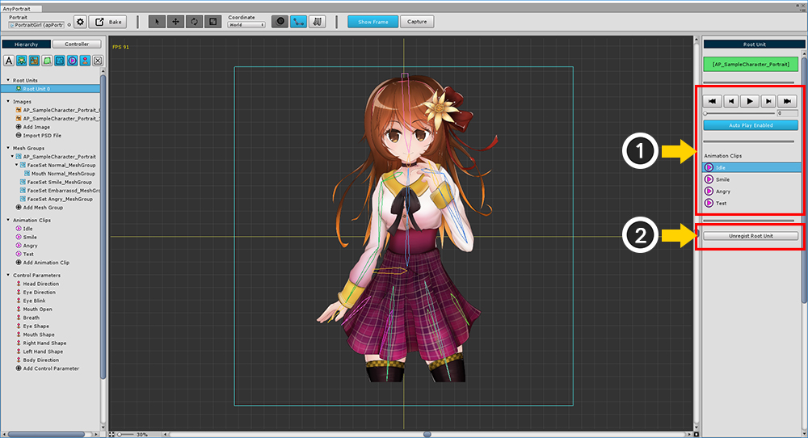

AnyPortrait > Manual > Register and Release Root Unit
Register and Release Root Unit
1.0.0

You must register as a root unit to move your character into the scene.
With the Setting tab of the mesh group selected, press the Set Root Unit button to register as the root unit.

You can see that Root Unit 0 is newly registered in Hierarchy UI.
The root unit has no name and is given a index number in the order of registration.
If you want to control it in a script, you can use this number to distinguish it.

On the screen where you select the root unit you can specify (1) the animation to start automatically,
(2) cancel registration from the root unit.

It is also possible to register two or more root units.
When registering and using multiple root units, the following features are available.
- Root Unit 0 is the default and the rest is hidden.
- You can use the functions in the script to switch the root unit.
- When you execute the animation using script, it automatically switches to the root unit corresponding to the animation.
- The index of the root unit is specified in the registration order.